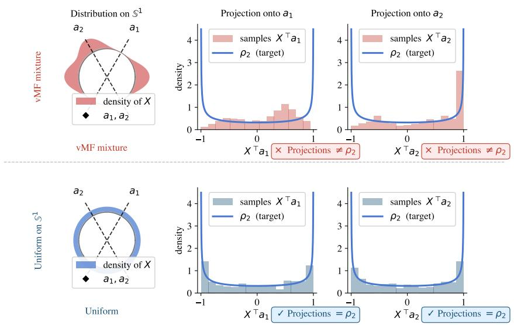
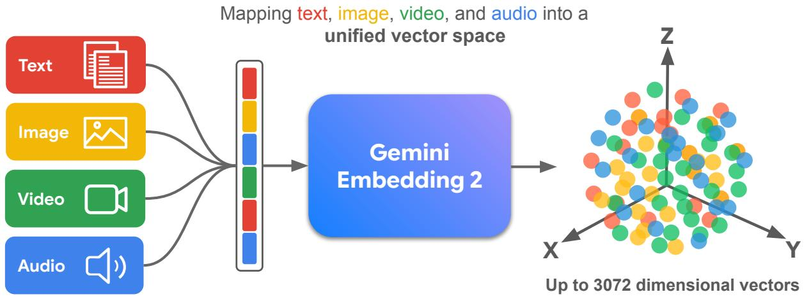
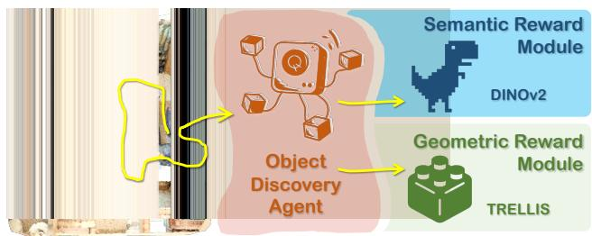
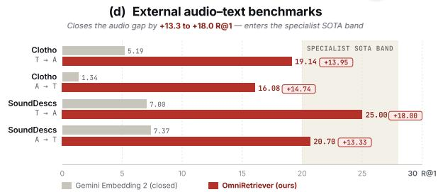
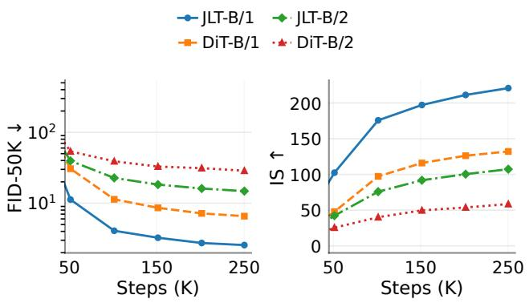
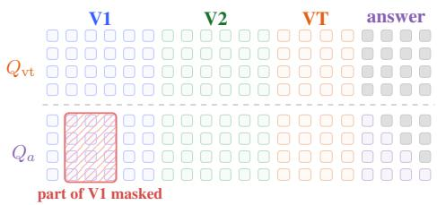
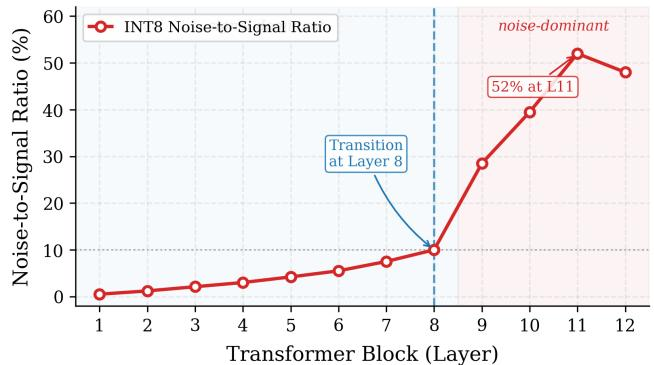
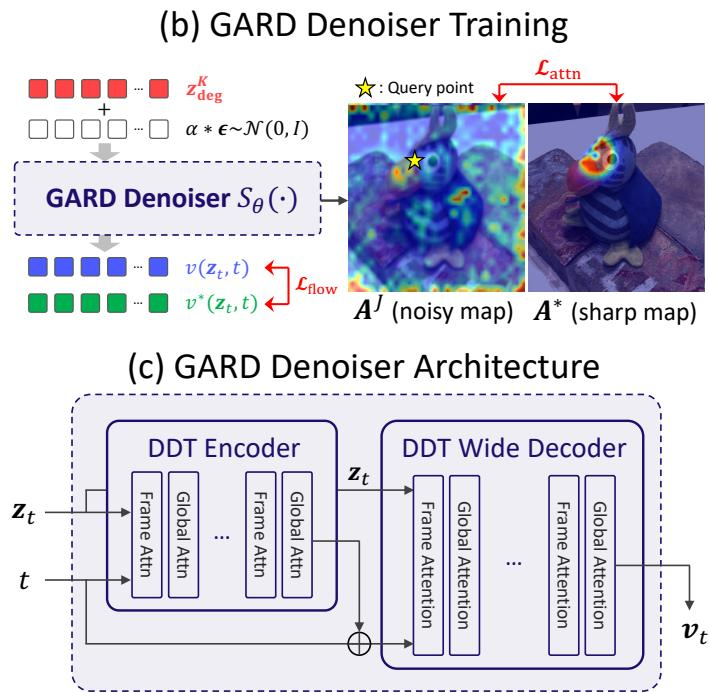
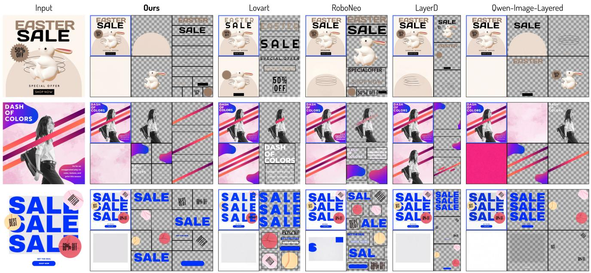
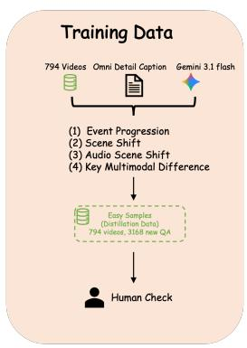

P0SPHERE-JEPA: Spherical Prediction with Homogeneous Embeddings
高相关；详见方法、贡献和实验边界。
方法：从表示几何解释 JEPA/SSL，直接讨论 hyperspherical uniformity 与 ImageNet linear probe
收录近期通用视觉自监督、视觉基础模型与多模态表征学习论文，按日期、优先级与主题归档。

P0高相关；详见方法、贡献和实验边界。
方法：从表示几何解释 JEPA/SSL，直接讨论 hyperspherical uniformity 与 ImageNet linear probe

P0高相关；详见方法、贡献和实验边界。
方法：原生视频/音频/图像/文本统一 embedding，代表大模型路线里的多模态表征基座
高相关；详见方法、贡献和实验边界。
方法：把监督直接打到 visual tokens 上，解决 MLLM 中视觉 token 只被文本 loss 间接优化的问题

P0高相关；详见方法、贡献和实验边界。
方法：用自监督 2D/3D foundation models 作为 reward，做无场景标注 3D object discovery

P1中高相关；详见方法、贡献和实验边界。
方法：teacher-fusion distillation 学任意 audio/video/text 检索 embedding，与 Gemini Embedding 2 形成对照

P1中高相关；详见方法、贡献和实验边界。
方法：说明 latent diffusion 的预测目标是表示几何选择，不只是 x/epsilon/v 的代数互换
中高相关；详见方法、贡献和实验边界。
方法：不重训地把 DINOv3/DepthAnythingV2 这类高分辨率 VFM 加速，影响通用视觉基础模型部署
中高相关；详见方法、贡献和实验边界。
方法：面向 CLIP 长文本/局部区域不足，做 global-local 图文对齐微调
中相关；详见方法、贡献和实验边界。
方法：把问题相关性和相机几何写入视频 memory，对 Video-LLM temporal grounding 有参考价值

P2中相关；详见方法、贡献和实验边界。
方法：研究统一多模态模型是否真正使用生成的中间视觉思考图

P2中相关；详见方法、贡献和实验边界。
方法：揭示 INT8 CLIP 的 joint embedding 方向会在深层量化噪声中坍塌

P2中相关；详见方法、贡献和实验边界。
方法：在 3D reconstruction 模型特征空间做 diffusion denoising，体现“修特征而非修像素”的路线

P3中相关；详见方法、贡献和实验边界。
方法：20B masked region diffusion，把选择性 token masking 用在多层透明图像生成/编辑

P3中相关；详见方法、贡献和实验边界。
方法：对长 audio-video token 序列做 memory compression 和 distillation
中相关；详见方法、贡献和实验边界。
方法：无监督 3D 点云去噪中的 mirror-point consistency，几何 SSL 信号明确但任务较专
中相关；详见方法、贡献和实验边界。
方法：VideoLLM temporal grounding 诊断：模型可能把视频当事件袋而非时序结构
 P1
P1
今天最值得先读：它不是完整 CLIP 式预训练，而是把语言语义变成低成本的视觉表征塑形目标。
方法：frozen text encoder semantic anchors for image representation training
 P1
P1
适合关注多模态预训练数据效率的人精读：它把合成图文对放进分布匹配和对齐保持问题里。
方法：geometric multimodal distribution matching for image-text dataset distillation
 P2
P2
它把视频自监督和 Video-LLM 后训练接起来，值得和 V-JEPA、视频掩码建模放在一起看。
方法：temporal-aware questioner reward and temporal-grounded solver reward
 P2
P2
这是一个诊断工具型论文：以后看 latent visual token 方法时，应该要求内容替换消融。
方法：token replacement test for continuous and discrete visual thought tokens
 P3
P3
偏理论和监督表征，但对理解 linear probe、原型、均匀性和表征几何有参考价值。
方法：prototype contrast with NTCE / NONL objectives on the hypersphere
 扫读
扫读
模态较专，适合作为自监督 backbone 迁移到异构视觉模态的扫读案例。
方法：self-supervised event-based Swin Transformer plus lightweight saliency decoder
 P1
P1
视觉自监督和视觉语言预训练之间的边界被进一步打薄：它仍然预测 feature，不直接重建像素，也不完全依赖对比学习。
方法：caption-conditioned masked feature prediction with sparse cross-attention text conditioner
 P1
P1
它把视频 SSL 的目标从重建下一帧推向重建“低层没有解释完的部分”。
方法：hierarchical residual world model for self-supervised visual foresight
 P1
P1
用伪位姿把跨帧 token 固定到共享空间，是视频 VFM/MLLM 很值得跟的结构化监督。
方法：learnable camera tokens + pose regression head for frame-level grounding
 P2
P2
这类诊断比单纯刷视频 QA 更有价值，因为它定位了视觉表征到语言读出的断点。
方法：feature-delta motion vector objective at projector level
 P2
P2
这篇不是 JEPA，而是 VLM 视觉 token grounding：冻结几何编码器的证据被分配给多层视觉 token。
方法：multi-level geometry bank + residual grounding before LLM reasoning
 P1
P1
它把多模态表征学习的问题改写成模态图连通性问题，重点不在堆更多模态，而在证明 pairwise supervision 也能学习共享/私有 latent 结构。
方法：self-modal reconstruction + pairwise contrastive latent alignment